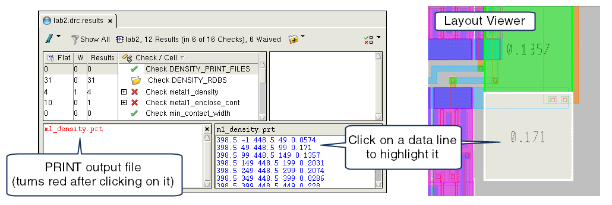

Calibre RVE can
display the contents of the files output by the Net Area Ratio Print
operation and the PRINT keyword of the Density operation and highlight the
location of the violations. The Net Area Ratio Print operation saves
the output of a Net Area Ratio ACCUMULATE operation, which is often
used to check for antenna violations.
Procedure
- Enable View > Check Text Pane.
- Enable View > Tree Options > Show Empty Checks.
- In the tree view, click a
check that includes a print output file.
The name of the print output
file is shown in blue text in the check text pane.
- In the Check Text Pane, click
the print output filename.
A second pane is opened to
the right of the Check Text Pane and the contents of the print output
file are displayed in the new pane. The print output file typically
contains coordinates and an output value; see the documentation
for the relevant command for complete details.
- In the print output pane,
click on an output line.
The output location is highlighted,
and the output value is displayed as a property.
Results
The view shown in Figure 1 is produced by the following Density
operation with the PRINT keyword:
DENSITY metal1 < 0.25 WINDOW 50 PRINT m1_density.prt
RDB lab2_m1_density.rdb
Figure 1. Print Output File in
Calibre RVE for DRC